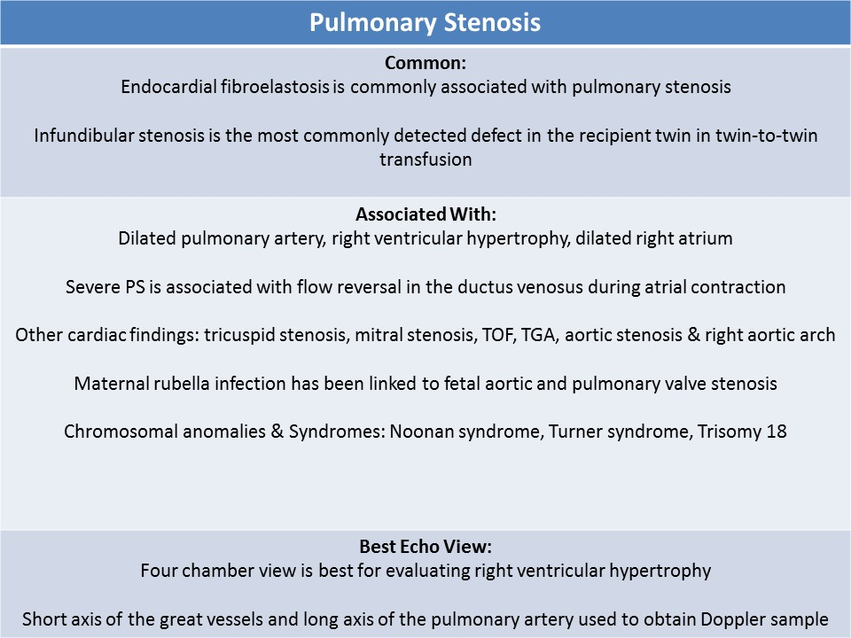
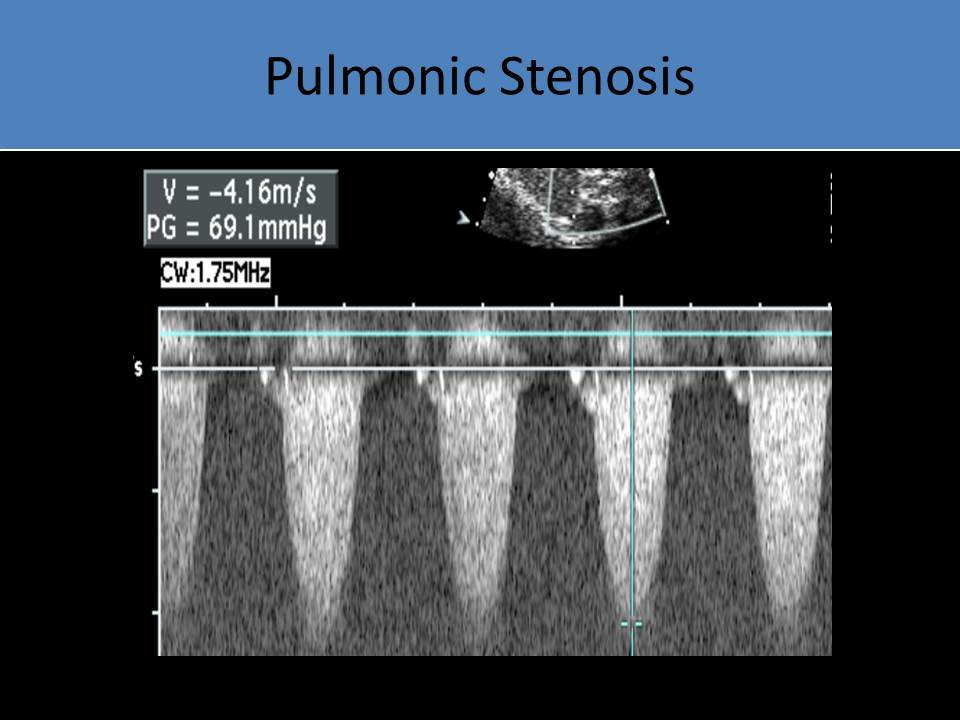

.jpg)
Pulmonic Stenosis
General Information:
- Obstruction of the right ventricular outflow tract, within the body of the right ventricle, at the pulmonic valve, or in the branch arteries
- Fusion of the pulmonic cusps, dysplastic valve leaflets with small pulmonary valve annulus is most common
- Types: subvalvular, valvular, supravalvular
- May see bicuspid pulmonic valve or unicommissural (single leaflet) valve
- Right ventricular hypertrophy and RVOT obstruction( dynamic)
- Severe pulmonary stenosis can be difficult to differentiate from pulmonary atresia
- Rarely an isolated finding, usually occurs with other CHD or syndromes
- Associated with aortic stenosis and right sided aortic arch
- Maternal rubella infection has been linked to fetal aortic and pulmonary valve stenosis
- Related with Noonan syndrome ( 50% of Noonan syndrome cases have pulmonic stenosis)
- Commonly seen in Trisomy 18 and Turner syndrome
- Complication of twin to twin transfusion
- Increased preload in the recipient twin causes biventricular thickening
- Infundibular pulmonary stenosis develops first, followed by subvalvular aortic stenosis
- Also associated with Tetralogy of Fallot, ventricular septal defect, absent pulmonary valve syndrome, double outlet right ventricle, d-TGA and l-TGA, heterotaxy, Ebstein anomaly
- CHF and hydrops can develop with severe stenosis
- Associated with maternal rubella and alcohol use
- Postnatally right to left shunting through foramen ovale occurs with severe pulmonic stenosis

Fetal Echo Findings:- Four chamber view: right ventricular hypertrophy
- Post-stenotic dilatation of the pulmonary artery is common with valvular stenosis (three vessel view)
- Mild stenosis can be missed on fetal exams
- Right atrial enlargement with tricuspid regurgitation (indication of right heart failure)
- Dysplastic and thickened pulmonic valve with turbulent flow
- Pulmonary leaflets visible throughout the cardiac cycle = thickening/stenosis
- Occasionally dilated right ventricle with poor function
- Reversal of flow in the ductus arteriosus is common
- Ductus venosus can demonstrate pulsatile flow with flow reversal during the atrial contraction

The heart appears to be enlarged and the right ventricle is moderately hypertrophied secondary to pulmonic stenosis. The tricuspid valve has limited excursion and is dysplastic.
The pulmonic valve is dysplastic and doming in systole. The main pulmonary artery is dilated (post stenotic dilatation) and there is mild pulmonic regurgitation. Color Doppler describes turbulent flow through the pulmonic valve.
Short axis view of the aortic valve; Color Doppler shows turbulent flow through the pulmonic valve.